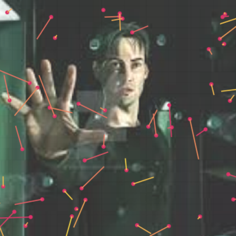

What is new in 4.3.0#
coord_polar()
The polar coordinate system is most commonly used for pie charts, but it can also be used for constructing Spyder or Radar charts using the
flatoption.

See: example notebook.
In the theme()
panel_insetparameter - primarily used for plots with polar coordinates.See: example notebook.
panel_border_ontopparameter - enables the drawing of panel border on top of the plot geoms.panel_grid_ontop,panel_grid_ontop_x,panel_grid_ontop_yparameters - enable the drawing of grid lines on top of the plot geoms.
geom_curve()

See: example notebook.
[UNIQUE] Visualizing Graph-like Data with geom_segment() and geom_curve()
Aesthetics
size_start,size_end,stroke_startandstroke_endenable better alignment of segments/curves with nodes of the graph by considering the size of the nodes.The
spacerparameter allows for additional manual fine-tuning.


See:
The alpha_stroke Parameter in geom_label()
Use the
alpha_strokeparameter to applyalphato entirelabel. By default,alphais only applied to the label background.See: example notebook.
Showing Plots in External Browser
The
LetsPlot.setup_show_ext()directive allows plots to be displayed in an external browser window.
Recent Updates in the Gallery#



Change Log#
See CHANGELOG.md for other changes and fixes.